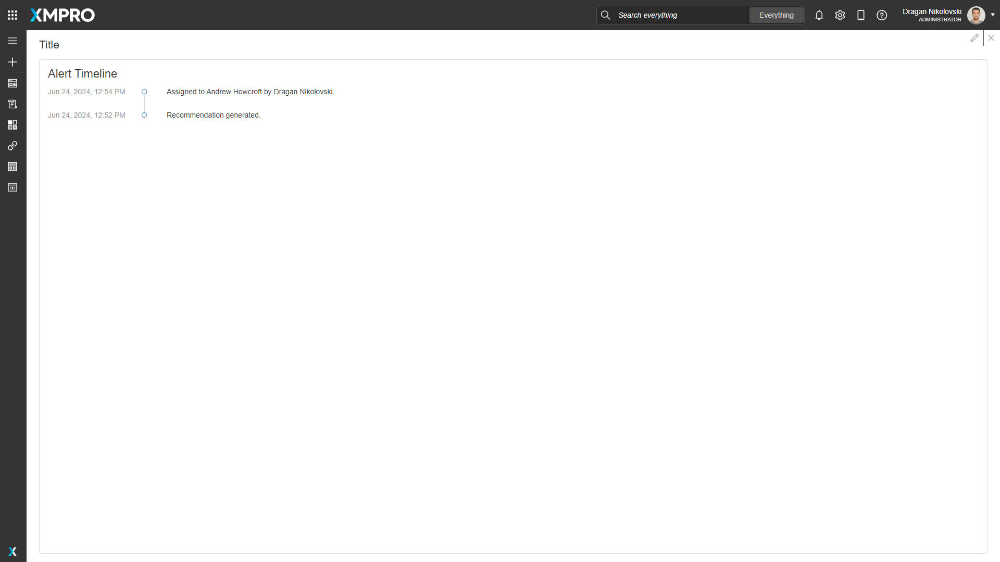
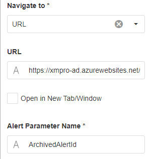

Alert Timeline
v4.4.7
A list of the activities that have occurred on an Alert.
If this list includes a hyperlink for an escalated alert, configuration properties allow the designer to determine the behavior of that hyperlink. Perhaps the design is for all alerts to be shown using the same Page, or use a formula to show archived alerts on a different Page in the same or a different App (use the URL option to accomplish this).
 Fig 1: Alert Timeline
Alert Timeline Properties
Appearance
Common Properties
The visibility property is common to most Blocks;
See the Common Properties article for more details on common appearance properties.
Title
Optional text that shows at the top of the block and defaults to "Alert Timeline".
Behavior
Alert ID
Supply an Alert Identifier and its timeline is displayed when the Page is opened.
Navigate To
This configures the page or website that the webpage will navigate to when the user clicks on a linked alert's hyperlink:
- Page takes you to the specified page of the current App, optionally in a new tab/window
- URL takes you to the specified URL (any website), optionally in a new tab/window
Page
The page to which the user is redirected, which is applicable when Navigate To is set to 'Page'.
 Fig 2: Navigate To and Page properties
Fig 2: Navigate To and Page properties
See the Navigate Between Pages article for more information about navigating between pages.
URL
The URL to which the user is redirected, which is applicable when Navigate To is set to 'URL'.
 Fig 3: Navigate To, URL, Open in New Tab/Window, and Alert Paramater Name properties
Open in New Tab/Window
Tick to open in a new tab/window, instead of redirecting the current tab.
Alert Parameter Name
Supply the parameter name of the Page/URL that will be used to navigate to the escalated alert. It is used to append the escalated Alert Identifier.
Last modified: May 31, 2025